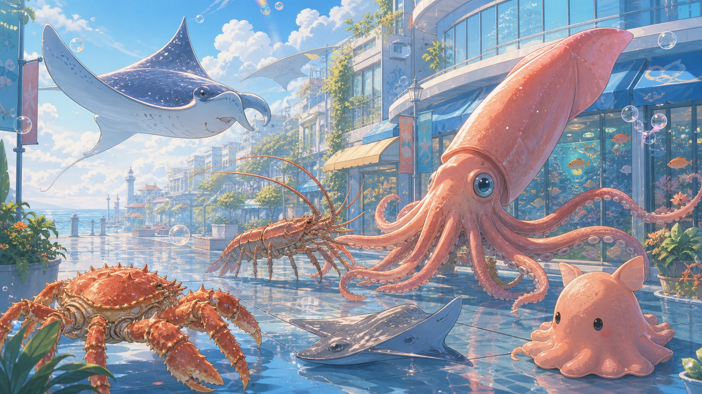

親子イベントで、カードをかざすと動くって強いかも。
これは毎日の育児グッズというより、親子イベントや教室、地域企画を作る側の人に刺さるものです。チラシだけだと帰りのバッグでくしゃっとなりがち。でも「持ち帰れるカード」と「スマホで動く体験」がセットになると、子どもの記憶に残りやすいんですよね。

園・習い事・地域イベントなら、ただ配るより“体験つき”が残りやすい。
子ども向けのイベントって、かわいい紙ものを配っても、家に帰る頃には親の荷物の中で迷子になりがちです。そこでカードをかざすとキャラクターや案内が動く、みたいな入口があると、親子で「ちょっと見てみようか」になりやすい。MIO的には、売り込み感を強く出すより、思い出と案内を同時に渡す使い方が合いそうだなと思いました。
どんな場面に合いそう？
子ども会・地域イベント
来場記念カード、スタンプラリー、抽選の案内などに。持ち帰ったあとも親子で見返しやすくなります。
習い事教室・体験会
英語、ダンス、スポーツ、プログラミングなどの体験会で、教室の雰囲気を楽しく伝える入口に。
店舗・観光施設
水族館、動物園、写真館、カフェ、キッズスペースなど、親子の滞在体験と相性が良さそうです。
普通のチラシより良さそうなところ
- 持ち帰ってもらいやすい。カード型だと、ただの紙より少し特別感が出ます。子どもが「これ持って帰る」と言いやすいのも強いです。
- アプリ不要なら、親のハードルが低い。イベント中にアプリを入れてもらうのはけっこう大変。WebARなら、その場の案内を短くできます。
- SNSや写真と組み合わせやすい。親子で遊ぶ、撮る、持ち帰る、あとで思い出す。この流れが作れると、チラシだけの案内より自然です。
導入前に確認したいこと
- スマホ操作が苦手な保護者にも伝わる案内になっているか
- イベント会場の通信環境で問題なく体験できそうか
- 子どもの写真や個人情報の扱いを集めすぎない設計になっているか
- 制作納期、費用、最小ロット、修正回数などを事前に確認できるか
- カードを渡したあと、問い合わせ・予約・次回来店につながる案内があるか
紹介されやすい企画にするためのチェック
- 「何のイベントで、誰向けか」が1文で伝わるタイトルにする
- カードを受け取った親子が家で見返す理由を作る
- 園、教室、店舗、地域団体のサイトから案内しやすいURLを用意する
- SNS投稿を促す場合は、撮影範囲と同意ルールを先に決める
- イベント後に申し込み、予約、次回告知へ進めるページを用意する
デジスタカードを見てみる
親子向けイベントや店舗企画で、AR体験をカードにする選択肢。
「紙で配って終わり」ではなく、子どもが触って、親がスマホで見て、あとで思い出せる形にしたい時に。イベント運営側・教室・店舗の販促アイデアとしてチェックしておくと良さそうです。
申し込み前に、対応端末、制作条件、納期、費用、個人情報の扱いを公式案内で確認してください。

よくある質問
デジスタカードは家庭向けの商品ですか？
どちらかというと、親子イベント、店舗、教室、地域企画など、体験を作る側に向いたサービスです。家庭で使う日用品というより、子どもや親子に覚えてもらうための販促・体験づくりとして見るとわかりやすいです。
アプリなしで体験できるのですか？
広告主の案内では、アプリ不要で体験できるWebAR対応カードとして紹介されています。実際の仕様、対応端末、制作条件は申し込み先で最新情報を確認してください。
子ども向けイベントで使う時の注意点は？
スマホ操作の案内を短くすること、保護者が見ても不安にならない説明にすること、個人情報を集めすぎないことが大事です。写真やSNS投稿を促す場合は、撮影ルールや同意の扱いも先に決めておくと安心です。